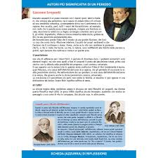
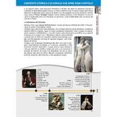

PWA editoriale didattica
L'eco di Foscolo
a cura di gbprof e Libera
Questa PWA prova a fare quello che EPUB e PDF, da soli, non riescono a tenere insieme: testo vivo, immagini impaginate, atmosfera da libro e struttura didattica usabile davvero in classe.
Su desktop la lettura si apre come un libro a doppia pagina; su tablet e smartphone diventa una pagina singola, più leggibile e stabile. Il testo resta selezionabile, annotabile e adattabile.


